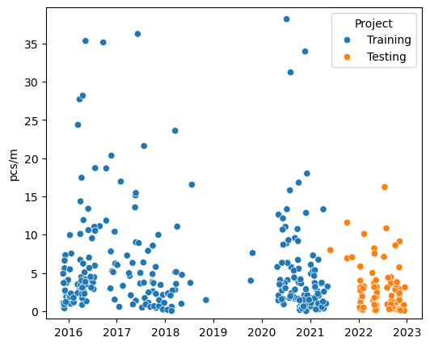
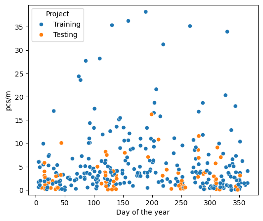
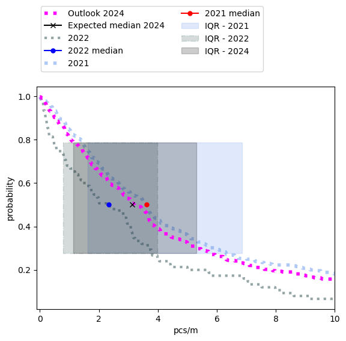
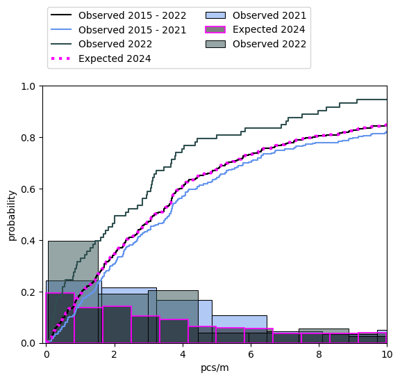
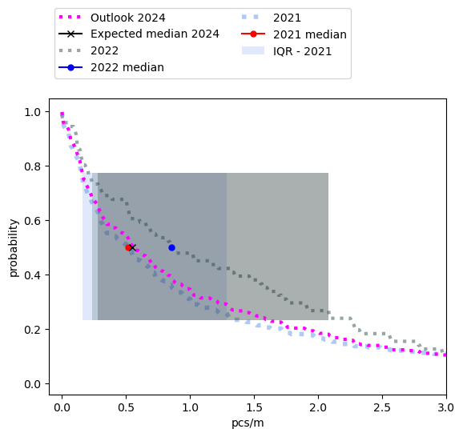
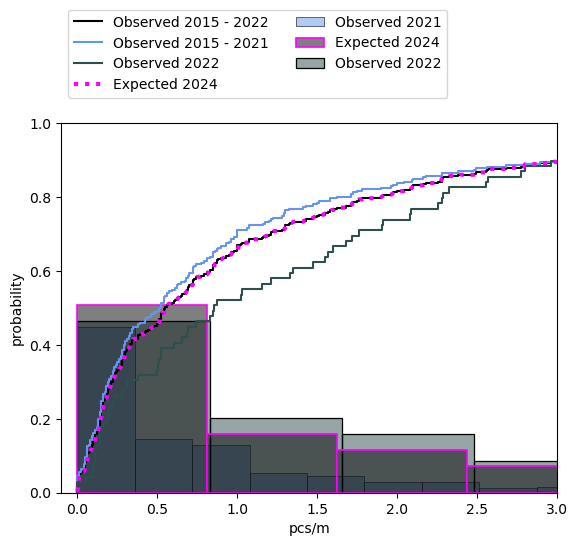
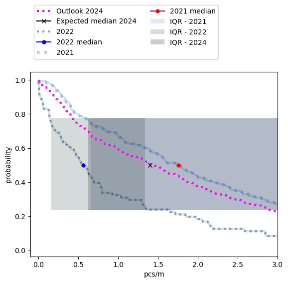
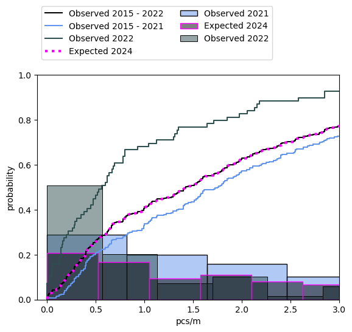

3. Empirical Bayes: grid approximations#
Note to colleagues:
This concerns the data from the federal report and a subset of data gathered in 2022. Since the puplication of IQAASL in December 2021 there has been addtional data collection events on Lac Léman:
SWE team
Association for the Sauvegarde du Léman ASL completed 100 beach litter surveys in 2022
Previous associated work, general guidance, big picture:
Common sense guidance:
The data should be considered as a reasonable estimate of the minimum amount of trash on the ground at the time of the survey.
The shoreline is the point where objects abandoned on land enter the water and where objects that are in the water get deposited on the beach.
It is necessary to consider the data as a whole. There are many sources of variance. We have treated litter density between sampling groups and the covariance of litter density with topographical features.
There are differences between the sampling groups.
There are differences between sampling locations
There are differences in detect-ability and appearance for items of the same code that are due to the effects of decomposition.
Surveyors are volunteers and have different levels of experience or physical constraints that limit what will actually be collected and counted.
If we are using the data to estimate the environmental condition then the response should answer the question:
What and how much are the volunteers likely to find?
This is the most honest answer that can be derived from the data. How well the counts perform over time is part of what we are discussing here.
Application:
Environmental assessment: Where this fits in the environmental assessment process is not clear. For example, when the health of the lake is considered are the findings for litter-data considered alongside bathing water quality? The EU adopted the principle of precaution when the suggested threshold of beach litter was set to 20 pieces of trash for 100 meters Beach litter thresholds.
Stakeholder impact: Despite the differences in the surveying groups Section one - differences between groups we see that the group with the most samples has the greatest range in the IQR. However, the median value is still close to the others indicating that we have not yet found a maximum but there is some consensus between the groups where the median might be for the lake.
Parameters of interest: Considerable effort has been put to exploring the covariance between litter objects and topographical features. There are many positive covariates among objects and topographical features Near or far. Suggesting that certain features may be used as parameter values when constructing models. We test this hypothesis when constructing predictions for municipal locations.
Sampling strategy:
Consistent with 1 and given the context in which the samples were collected Summary test and training data and because of the work in 2.3 we can see the benefits in sampling many different locations. We have uncertainty about where the ‘median’ is based on the spread of the sampling statistic but we are not concerned about the geographic spread.
The experience with the students demonstrates the importance of small actions. On their own they do not say much about the lake. However, in relation to and combined with the observations with the other groups we have a better idea of what we might find in general and some specific information about Saint Sulpice Section one - differences between groups.
Six year sampling period
The timing of the newest samples, seven years after the first samples were recorded, could be interpreted as the begining of a new six year sampling period that started in January 2022. The Joint Research Center (JRC) at the EU suggest a six year sampling period with preferably ~ 40 surveys in that time, for each beach that is being monitored Beach litter thresholds. If these conditions are met a baseline value can be established for the location in question. The baseline value, using this method is the median value of the surveys for the time period.
There are over 250 samples from 38 different locations on the lake in the initial six year period. There are no locations that have 40 surveys, therefore the method described previously would not be appropriate for any single location, but it is more than enough for the lake.
3.1. Research questions#
For the lake and Saint Sulpice:
Given the data from 2022, Is there an increase, decrease or no change in the expected survey results given the consolidated results from 2015 - 2021?
Given the median value for the objects of interest in 2021, what is the chance that a survey in 2022 will exceed this value?
How do the results from 2022 change the expected survey results going forward?
3.2. Practical applications#
Investments have been made to either prevent or remove litter from the public space. The investments are made with the intention of reducing litter in the environment. The answers to the research questions should help evaluate the return on investment (ROI) from previous projects and provide insights for projects going forward.
Did the investment result in a net decline in litter?
What objects were particularly effected?
How does the municpality compare to the rest of the lake?
Where are areas that are in need of the most investment?
3.3. Constraints#
The assessment method must produce information that directly answers the research question and can be put to practical application immediatley. The data produced should reduce the effort required to produce more specific models.
There must be a method to check results integrated into the process.
There must be another method that given the same data produces approximately the same results
The basic calculation should be as simple as possible.
By this we mean the definition of the basic calculation should result from a text-book or similar.
The prefered level is Maturité Federal or level one calculus
The basic calculation should be executable on a spread sheet
The method must be scalable
There should be a path to backend server operations
Output formatting should take ML operations into consideration
Discarding or disregarding data is highly discouraged.
3.4. Definitions#
threshold: The pieces of trash per meter of interest. A float value between 0 and 9.99. This represents between 0 and 999 pieces of trash for every 100 meters. Survey values of individual objects rarely exceeded this range.
object-code: Connects the survey data to information about the category of the object counted. This contains information like material type or intended use. Groups of object-codes can be used to define sources or orgins.
frequency: The frequency of exceeding a threshold is the number of times that a threshold was exceeded (k) divided by the number of samples taken (n) or k/n.
bounding-hex: A hexagon inscribed in a circle of r=1500 m with the survey location at the center
dry-land: The portion of a bounding hex that is not covered by water.
land-cover: The topographical features within a bounding hex that are common to most survey locations. Land-cover features can occupy op to 100% of available dry land. A bounding hex contains at least one land-cover feature.
land-use: The topographical features within a bounding hex that are superimposed over the land cover. Land-use features occupy between 0 - 10% of the available dry-land. A bounding hex may or may not contain a land-use feature.
event: The action of picking up a certain number of pieces of trash, indentifying them and counting them
probability: The conditional probability \(\theta\) that the number of events will exceed a threshold for a given object-code under the defined conditions of the bounding-hex
3.5. Assumptions#
Locations that have similar environmental conditions will yield similar survey results
There is an exchange of material (trash) between the beach and body of water
Following from two, the material recovered at the beach is a result of the assumed exchange
The type of activities adjacent to the survey location are an indicator of the trash that will be found there
Following from four and three, the local environmental conditions are an indicator of the local contribution to the mix of objects at the beach
Surveys are not 100% accurate
Some objects will be misidentified
Not all objects will be found
There will be inaccuracies in object counts or data entry
Following one through 6: the survey results are a reasonable estimate of the minimum number of objects that were present at the time the survey was completed
3.6. Test data, training data and objects of interest#
Warning
This report does not inculde surveys from the French side of the lake. This is becasue the orginal six years was done using the set of topographical data from Swiss geo admin. To include French locations in this model regional authoritities/experts need to define the appropriate map layers or data sources from France and then a correspondance needs to be established between the two sources.
Training data: All the survey records on or before May 31, 2021
Test data: All the survey records after after May 31, 2021
objects of interest: The object(s) for which further information is requested. Identified by the object-code.
The test and training data is the set of all data collected in Switzerland using the protocol defined in the guide (Guidance on Monitoring Marine Litter in European Seas). More specifically: the test and training data are the results of object (trash) counts from individual survey locations over a delimitted length or surface area that is bordered on one side by a lake. The guide suggests a standard length of 100 m of shoreline, this was encouraged but not considered a criteria for exclusion. The minimum recorded survey length of the training data is 5 m, in the test data it is 18 m. The width is measured from the water line to the high-water mark or the physical limits of the beach itself. For the purposes of this study the only minimum length or width for a survey to be valid is that which is imposed by the data itself.
3.6.1. The training data#
The training data was collected by a variety of organizations over a six year period. In the first sampling campaign (MCBP: 2015-2016) the data from Lake Geneva is primarily from the south part of the lake and collected by two people. Residents of the area would know the region as the Haut Lac with most of the samples coming from the Riviera (agglomermation of Vevey, La Tour-de-Peilz and Montreux). In the second sampling campaign (SLR: 2017-2018) the samples were collected by volunteers from the WWF (WWF). The range extended from the Haut Lac to Gland, including survey locations in Lausanne.
The last survey campaign (IQAASL: 2020 - 2021) collected samples from each major region of the lake monthly at fixed locations, other locations were added spontaneously. When the results of SLR were compared to IQAASL a decrease in the number of objects associated with food and tobacco use was considered probable. However, it was unclear if that decline was due to the pandemic restrictions of 2020, Conclusion SLR v/s IQAASL.
3.6.2. The test data#
The test data is a combination of the data collected by the ASL and the SWE team. Plastock is a project run by the ASL between January and December 2022. They conducted 95 beach liter surveys, from 25 different locations (plastock). The data was analyzed in partnership with the project manager from the ASL to determine suitability for this study. The protocol for plastock was based off of the national survey protocol (IQAASL), the collection and identification was completed by volunteers.
The survey dimensions in 2022 (test data) were on average longer 69 m v/s 48 m and wider 430 m² v/s 209 m² than the training data. There are a total of 245 samples in the training data, this is all the data collected in the first six year sampling period. There are 99 samples in the test data, 95 samples from the ASL and 4 samples from SWE. The test and training data are described by seven columns: loc_date (location and date), location, date, day of year (doy), project (testing or training), code (object code), pcs/m (pieces per meter).
3.6.3. The objects of interest#
From the 2021 report there are 230 object-codes that can be attributed to each one of the 384 surveys. Some objects were found and counted only once, such as paint brushes (G166) others were found in 87% of all samples, cigarette ends (G27). The 15 most abundant objects from Lake Geneva indentified in IQAASL account for 75% of all the objects counted that year Lake Geneva IQAASL, table one. There are some exceptions that must be eliminated, and explained:
Nurdles or injection molding pellets were not counted prior to 2020
Plastock was focussed on plastic objects
The codes of interest are selected from the 15 most abundant objects from the federal report of 2021 AND specific objects that were counted less often but are relativeley easy to identify. Furthermore, we only consider the objects that were also identified in the testing data.
A surveyor is likely to encounter common objects in the various states of fragmentation or decomposition. Objects that are easy to identify or to describe have a better chance a being placed under the correct object code. For example a cigarette end is immediately recognizable. Fragmented or otherwise degraded objests are challenging, determining wether or not a plastic bottle cap comes from a beverage or a chemical container can be difficult when all the labeling is removed or eroded. From the original data the following object-codes were aggregated into groups:
Gfoam: Fragmented expanded polystyrene, object-codes: G81, G82, G83
Gfrags: Fragmented plastics, object-codes: G78, G79, G80, G75, G76, G77
Gcaps: Plastic bottle lids and lid rings, object-codes: G21, G23, G24
Note that aggregating object codes into groups is a common strategy. When evaluating litter densities in the marine environment Single Use Plastics (SUP’s) is a common group that contains the objects like plastic bottles or disposable food containers another common group is fishing gear Beach litter thresholds. There are 16 objects of interest for this initial study (including the three aggregated groups). These objects represent different use-cases and sources. It is these use cases we will evaluate.
Personal hygiene (Ph), spatial source: diffuse, toilets, water treatment facilities
G95: cotton swabs
Personal consumption (Pc), spatial source: local to survey location, abandoned within 1 500 m of the survey
G30: Snack wrappers
Gcaps: drink bottles, caps and lid rings
G10: To go containers
G25: Tobacco related, not cigartetts
G27: cigarette ends
G35: Straws and stirrers
G31: Lollypop sticks
G32: Toys, party favors
G33: Lids for to go drinks
Industrial/professional (Ip), spatial source: diffuse and local, transported to survey location or professional activities within 1 500 meters of survey location
G67: Plastic sheeting
G89: Construction plastics
Gfoam: Fragmented expanded polystyrene
Unknown (Unk), spatial source: diffuse and local, transported to survey location or professional activities within 1 500 meters of survey location
Gfrags: Fragmented plastics
Recreation/sports (Rc), spatial source: diffuse, transported to survey location, it is illegal to discharge firearms on the lakeshore
G70: Shotgun shells
3.6.4. Summary test and training data#
Another way to look at this collection of observations is that each sampling group collected the data for reasons that were specific to that group, the protocol provided a framework for ensuring consistency and a pathway to interpreting the results. However, this does not mean that each group interpreted the protocol in the same manner, nor does it mean that all objects collected were counted. By limiting analysis to specific object-codes, those that appear most often and/or those that are easily identified, uncertainty is reduced by leveraging frequency of occurence and domain experience.
Figure 1, Table 1 |
Table 2, Figure 3 |
|||||||||||||||||||||
|---|---|---|---|---|---|---|---|---|---|---|---|---|---|---|---|---|---|---|---|---|---|---|
 |
|
|||||||||||||||||||||
|
 |
3.7. Methods#
The research questions and practical applications are inquiring about expected results at the municipal level. There are records for 25 municipalities on Lake Geneva, some only have one sample in the entire sampling period. The negative binomial distribution was used to model expected survey results at the river bassin and national level Estimating baselines IQAASL. Here we are abandoning the assumption that the data has a particular shape and solving the binomial portion of the negative binomial distribution at each interval on the set of numbers from 0 - 10, every 0.01.
We use conditional probability because of the assumptions of our model. In this sense we are following trends from the conservationists and wildlife biologists. Both fields have a rich history of treating observations from the field that originate from citizen science projects and/or difficult field sampling conditions. Beach litter data collection is one such program. (summarizing bird counts, estimating age of survival, estimating tick abundance). The magnitude of the exchange between the water source and the beach is yet another variable that is for the most part unknown, except that which can be interpreted from the survey data (Identifying Marine Sources of Beached Plastics). In summary, there are many sources of variance, only one of which is the sampling error.
The applied method would best be classified as Empirical Bayes, in the sense that the prior is derived from the data (Bayesian Filtering and Smoothing, Empirical Bayes methods in classical and Bayesian inference). However, we share the concerns of Davidson-Pillon (Bayesian methods for hackers) about double counting and eliminate it as part of the formulation of the prior. This is possible because of the number of different locations and regions that were sampled durring the sampling period. The basis for this method was originally explored in the Swiss federal report and then again with much more rigor in Near or far.
Note
Model types or analytical labels are only important if the context is understood. Empirical Bayes means we are building a probabilistic model that uses existing data to establish those probabilities.
3.7.1. Grid Approximation#
Grid approximations are made from a series of point estimates calculated using Bayes theorem. Condtional probability and Bayes theorem makes it possible to measure the magnitude of an unknown parameter as long as the conditions can be quantified. There is no assumption about the underlying relationships between variables except that a realtionship exists. The relationship is defined in the notation: the probability of a given b or \(p(a|b)\). (Statistical Machine Learning Bayes’ theorem) (conditional proabability).
The proposed model only demands whether or not a threshold has been exceeded. This is a binary variable. Therfore each step in the grid can be modeled using the binomial distribution (Think Bayes 2, Bayes Rules! An Introduction to Applied Bayesian Modeling). The prior data can be introduced and the integral can be solved analytically by using the prior conjugate of the binomial(Bayesian methods for hackers,Prior Probabilities). The grid we are covering is relatively small, 1000 points, but it does represent real values in pieces of trash per meter between 0 and 10. This accounts for 99% of the data in the previous section.
Note
A grid approximation is not the same as a hierarchical model. The grid approximation is away to explore the suitability of the method with the data, in relation to the research question without the overhead of developing a full model. Because of the compromise a grid approximation is less accurate than a hierarchical model.
3.7.2. Conditional probability#
Conditional probability is the measure of the probability of an event occuring given that another event has occurred (Wikepedia). For this study the event under consideration is whether or not a threshold was exceeded. The probability of that event is noted \(p(\theta)\), the probability of \(\theta\) given a condition or set of condtions is \(p(\theta | condition(s))\).
The general case
Using the formal definition of conditional probability let a = \(\theta\) and b = event data, the probability of an event given a condtion is:
This is Bayes theorem, it tells us that the probability of event a is conditioned on event b. If the sample space can be defined by \(a\) and \(a^{\prime}\) then the total probability is the sum of the (likelihood * the prior) and (the complement to the prior*the complement to the likelihood). This means that we consider only two possible results: \(y \ge x\) or \(y \lt x\), where x is a threshold value and y is a survey result in pieces per meter (pcs/m). To use Bayes theorem we need to assign values to the likelihood and prior and cary out the math in (7).
Important
The beta distribution (8) is the prior conjugate to the binomial distribution (9) (Statistical Machine Learning, Conjugate prior). This means that the posterior distribution can be solved analytically. The evidence (11) which is an integral can be solved by recognizing that (11) is another way to write the beta distribution which integrates to one.
The mean (average) of the beta distribution above is \(\frac{a + s}{a + b + n}\), which is the value that is calculated for each interval in the grid approximation.
Therefore we can write the solution of Bayes theorem using the beta binomial conjugate model as:
3.7.3. The priors#
The priors used in this model are subjective, this is by definition because they come from the data (Bayesian Filtering and Smoothing). The subjecitve bias is caused by the use of data from similar experiments that were carried out under different conditions at similar locations. However, we omit the location(s) of interest from the prior data. Instead we rely on other locations that have similar a land-use configuration as the locations of interest.
This use of the prior fits well with the initial assumptions of the model and the previous work using Spearmans \(\rho\) to indentify covariates between objects and topographical features (Near or far). This increases the amount of available data for any single location. A distance component is used to capture the locations closest to the locations of interest. Regional denominations work well also. In this model the three regions of the lake are all considered subsets of prior data. (Empirical Bayes methods in classical and Bayesian inference)
3.7.3.1. The informed prior#
An informed prior is a collection of results from different locations that have smilar magnitudes of specific land-use attributes. An informed prior does not contain survey results from the components of the likelihood. It is located at least within the same river bassin and most often on the same body of water as the likelihood component. This can be made even more explicit:
informed prior: The probability of x described by a subset of the data that was observed at a date on or before the maximum date of the likelihood data being evaluated.
The initial evaluation should be a covariance test such as Spearmans \(\rho\) or other
The subset of data is related to the observed data either geographically or by a measurable attribute
example of geographic relationship: same lake or river basin
example of measurable attribute: similar land use configuration
samples within 5% of each other on the magnitude scale for buildings
the samples with the lowest percentile ranking for infrastructure
It may be benficial to note that this prior satisfies the condition of testability. Even though we do not know exactly what the prior distribution will be at any moment the conditions imposed give us an expected result based on experiences accrued elsewhere under similar conditions. In that sense we remain consistent with our assumptions and testable in the sense that the priors are quantifiable (Prior Probabilities).
The set of available data is small and choices or statements about the value of the \(prior\) have considerable weight in reference to the posterior distribution. Having multiple possible values for the \(prior\) is consistent with Bayesian analysis.(Gelman prior distribution).
3.7.3.2. The uninformed prior#
The uninformed prior is the initial prior we used, whch captures the expectations of most beach litter surveyors: you can find anything and if you do it long enough you will. The uninformed prior is the distribution such that every value of x on the described interval has an equal chance of occuring: 0.5 or 1/2 or even 50%. We use this prior when their is no source of prior data. For example, for Lake Geneva there is no other source of comparable data in the river bassin.
These values are exchanged in the form of the coeficients \(k, n-k\) in (8). The value that is in the grid is the mean of the binomial distribution of the probability of exceeding the threshold at that point. The grid has 1000 points. Having multiple possible values for the \(prior\) is analagous with looking at the problem from different angles or changing some baseline assumptions Our assumptions .
3.7.3.3. The measured land-use attributes#
Important
There are slight changes in the way the land-use variables are handled and described with respect to Near or far. Notably the infrastruture and recreation variables are scaled separately from the land-cover variables.
The land-use attributes are described here in detail. The descriptions are issue from the map themselves, these are easy to integrate into other geo maps from the swiss admin system. Here we are letting go of some of the control and limitting our varaibles to a set of choices. Those choices were derived by experts, they are certainly better at classifying land use than us.
The informed priors in this study are assembled by considering the survey results from locations that have similar environmental conditions. The connection between measurable land-use attributes and survey results was illustrated in the swiss national survey (IQAASL) and explored in depth, including early versions of the proposed model in Near or far. The source of the land-use data is swissTLMRegio, the details of extracting the data and defining the boundary conditions can be found here New map data.
land-cover
These measured land-use attributes are the labeled polygons from the map layer Landcover defined here (swissTLMRegio product information), they are extracted using vector overlay techniques in QGIS (QGIS). The overlay is a hexagon-grid, each hex is 3000m, circumcscribed by a circle r=1500m. The survey location is located at the center of the hex. The magnitude of the land-use variable is the portion of the total dry surface area for any particular land-use attribute. Areas of the hex that are not defined with a land-use attribute in this map layer are labeled undefined and processed like any other land-use attribute. The land-cover variables of interest are:
Buildings: built up, urbanized
Woods: not a park, harvesting of trees may be active
Vineyards: does not include any other type of agriculture
Orchards: not vineyards
Undefined: areas of the map with no predefined label
Land-use
Land-use variables are the labled polygons from the Freizeitareal and Nutzungsareal map layers, defined in (swissTLMRegio product information). Both layers represent areas used for specific activities. Freizeitareal identifies areas used for recreational purposes and Nutzungsareal represents areas such as hospitals, cemeteries, historical sites or incineration plants. As a ratio of the available dry-land in a hex, these features are relatively small (less than 10%) of the total dry-land. For identified features within a bounding hex the magnitude in meters² of these variables is scaled between 0 and 1, thus the scaled value represents the size of the feature in relation to all other measured values for that feature from all other hexagons.
Recreation: parks, sports fields, attractions
Infrastructure: Schools, Hospitals, cemeteries, powerplants
Streets and roads
Streets and roads are the labled polylines from the TLM Strasse map layer defined in (swissTLMRegio product information). All polyines from the map layer within a bounding hex are merged (disolved in QGIS commands) and the combined length of the polylines, in meters, is the magnitude of the variable for the bounding hex.
Covariance of land-use variables
The training data and the testing data come from the same lake. The locations surveyed in 2022 have different coefficients than 2021. Note how different the covaraince with cities is to woods and undefined land.
3.8. Results Lake Geneva#
Given the data from 2022, Is there an increase, decrease or no change in the expected survey results given the consolidated results from 2015 - 2021?
The average number of objects counted and indentified per meter is expected to decline going into 2024. However, the reduction is minimal (Figure 5) and not equally spread between all object groups or survey locations. Which means that these changes will not be readily observable and also the sampling distribution for 2024 will be very close to 2021 (Table 4, Figure 6). The combined daily total is the sum of the objects of interest per sample. In this case we are concerned with the objects listed in the Objects of interest section.
3.8.1. Previous and expected survey totals#
Figure 5, Table 3 |
Table 4, Figure 6 |
|||||||||||||||||||||
|---|---|---|---|---|---|---|---|---|---|---|---|---|---|---|---|---|---|---|---|---|---|---|
 |
|
|||||||||||||||||||||
|
 |
3.8.2. Previous and expected survey results of objects of interest#
Given the median value for the objects of interest in 2021, what is the chance that a survey in 2022 will exceed this value?
Table 5 |
||||||||||||
|---|---|---|---|---|---|---|---|---|---|---|---|---|
|
||||||||||||
There were more fragmented plastics identified per/meter in 2022 than 2021 (Figure 7, Table 6). Most municipalities will either experience a slight increase or nothing at all. Locations that have historically high counts of these objects will see the greatest increases. This was hypothesised in the 2021 report, the results from the testing data lend support to the assessement. From table 7 and figure 8 we can see how similar the expected values for 2024 are to 2021. |
3.8.2.1. Expected results fragmented plastics#
Figure 7, Table 6 |
Table 7, Figure 8 |
|||||||||||||||||||||
|---|---|---|---|---|---|---|---|---|---|---|---|---|---|---|---|---|---|---|---|---|---|---|
 |
|
|||||||||||||||||||||
|
 |
3.8.2.2. Expected results personal consumption#
Example: Personal consumption. The personal consumption objects are those objects that are likely to be used at the beach by visitors, this includes food and tobaco items. There were less personal consumption objects identified per/meter in 2022 than 2021 (Figure 9, Table 8). This effect should be the most noticeable in communities that have active prevention programs (Table 9, Figure 10).
Figure 9, Table 8 |
Table 9, Figure 10 |
|||||||||||||||||||||
|---|---|---|---|---|---|---|---|---|---|---|---|---|---|---|---|---|---|---|---|---|---|---|
 |
|
|||||||||||||||||||||
|
 |
3.8.2.3. Summary of expected survey results Lake Geneva#
How do the results from 2022 change the expected survey results going forward??
With the exception of fragmented plastics we expect reported beach litter densities to be lower in 2024. The greatest improvement will be concerning the objects of personal consumption, there is evidence of a decline that started in 2018 Summary comparison 2018 - 2021. These objects are often the main focus of anti litter campaigns. The expected low values for the Industrial group may be a case of mistaken identity. We base this on the fact that in 2021 fragmented plastics were 18% of the total, in 2022 that number rose to 50%. This is usually because inexperienced surveyors tend to not differentiate between fragmented items, thus some of the objects would be classified as Industrial or professional get placed under the more general category.
There are several item types that can be readily identified as Industrial or Profesional:
Conduit: PVC or ABS fragments
Plastic concrete form stops
Plastic saftey barrier fragments
Pallette angles
Industrial sheeting, heavy guage plastic for covering
Pheromone baits
The expected decline in Personal hygiene products is encouraging. However, there is no other reason to support the data. For example we are unaware if the sales of plastic cotton swabs has declined or if there is a proposed ban on these products like in France. We also note that there were no reported plastic tampon applicators indentified in 2022. This also may be case of lack of experience, given that plastic tampon applicators were found in 40% of the samples in 2021 Finding one object.
Table 10 |
||||||||||||||||||||||||||||||||||||
|---|---|---|---|---|---|---|---|---|---|---|---|---|---|---|---|---|---|---|---|---|---|---|---|---|---|---|---|---|---|---|---|---|---|---|---|---|
|
||||||||||||||||||||||||||||||||||||
Legend: Unk = Unknown group, PC = personal consumption, Ph = personal hygiene, Rc = recreation, Ip = industrial professional |
How do the results from 2022 change the expected survey results going forward??
Beach litter density at Saint Sulpice is expected to increase. Given the data from 2022 we expect the survey results to increase from the 2021 levels and the density at Saint Sulpice is expected to be greater than the expected value for the lake in general.
3.9. Discussion#
Potential points of discussion
The lake samples show a decline but the results at Saint Sulpice show an increase. Could this be because the samples at the lake level came from one sampling group and at Saint Sulpice from another?
Fragmented plastics are 40% of the objects in 2022 and but hisotrically it is around 20% for the lake. Why is their such a difference?
Is their other evidence to support the expected decline of personal consumption products found on the beach?
Were there changes to the water treatment facilities (or processes) that would support an anticipated decline in personal hygiene products in general but an increase at Saint Sulpice? For example there were no tampon applicators identified in 2022 but yet they were identified in 40% of samples from 2015-2021.
What does the presence of shotgun shells on the beach at Saint Sulpice say about hydrological transport mechanisms in lake?
3.10. Conclusions#
The grid approximations function as we expected. The flat areas in the predicted curves demonstrate the need for a more comprehensive model. However, the observed samples in 2022 are within the 94% HDI of the predictions. In most cases we can account for 80% - 100% of the observed with the prediction.
3.10.1. Next steps#
This script updated 22/08/2024 in Biel, CH
❤️ what you do everyday: analyst at hammerdirt
Git repo: https://github.com/hammerdirt-analyst/solid-waste-team.git
Git branch: main
seaborn : 0.13.2
numpy : 1.26.4
pandas : 2.2.2
matplotlib: 3.8.4